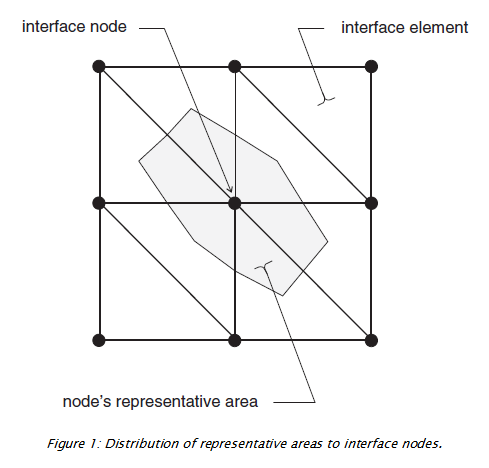
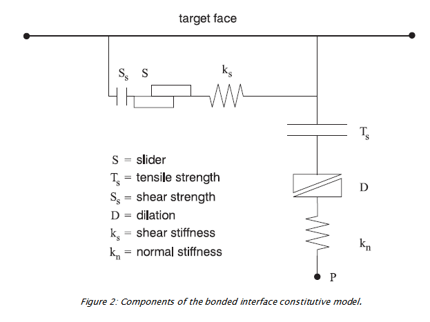
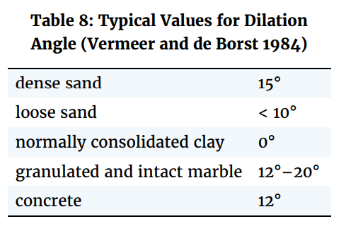
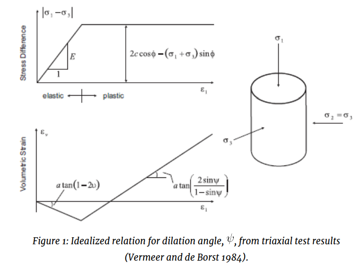
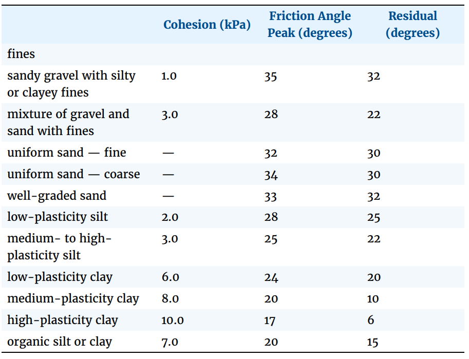
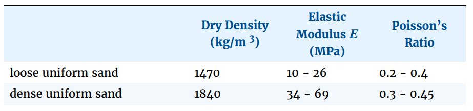
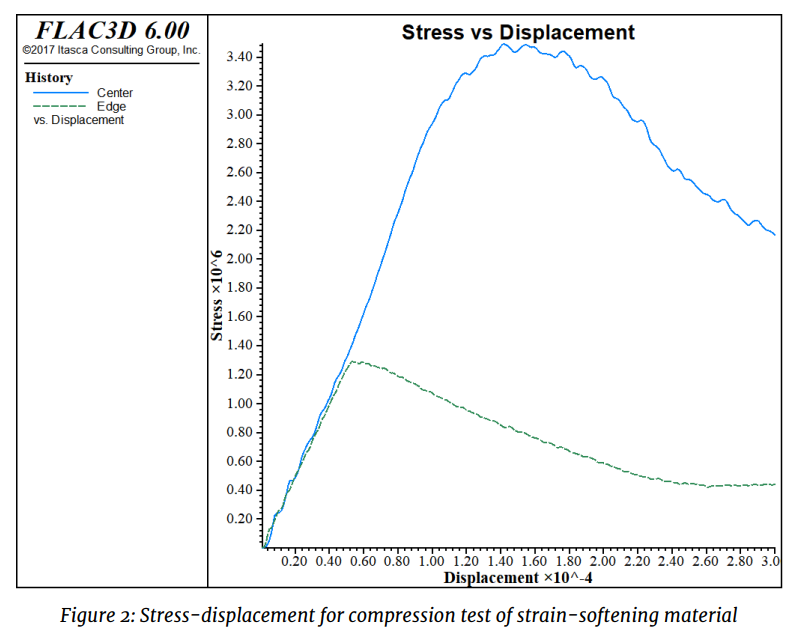

7 Theory
7.1 Structural Elements
Structural elements include beams, cables, piles, shells, geogrids, and liners. These can be either independent of, or coupled to, the grid. Full dynamic equations of motion are solved (Lagrangian solution procedure as opposed to implicit matrix-inversion procedure).
Section organization: 1. means by which SEL are created and joined 2. Boundary and Initial Conditions, Local Coord Sys. 3. Damping, Thermal, Material Properties 4. Mechanical behavior
Further, a detailed discussion of General Formulation of Structural-Element Logic provides more complex interaction btw SEL and grid.
7.1.1 Types of SEL
- Beam : 2-noded, straight finite element with 6 dof per node, 3 transl, 3 rot, which behaves as LE matl w no failure limit. Beam elements may be rigidly connected to grid st forces and bending moments develop within the beam as grid deforms. Beam Structural Elements — Beam structural elements are two-noded, straight, finite elements with six degrees of freedom per node: three translational components, and three rotational components. A physical beam (i.e., an arbitrarily curved, beam structure of isotropic material and bisymmetrical cross-section) can be modeled as a collection of beam elements. Each element behaves as a linearly elastic material with no failure limit; however, it is possible to introduce a limiting plastic moment, or even a plastic hinge (across which discontinuity in rotation may develop), between elements. Beam elements may be rigidly connected to the grid such that forces and bending moments develop within the beam as the grid deforms, and they may be loaded by point or distributed loads. Beam elements are used to model structural-support members in which bending resistance and limited bending moments occur, including support struts in an open-cut excavation and general framed structures loaded by point or distributed loads.
- Cable Structural Elements — Cable structural elements are two-noded, straight, finite elements with one axially oriented translational degree-of-freedom per node. A physical cable (i.e., an arbitrarily curved, cable structure of isotropic material) can be modeled as a collection of cable elements. Each element can yield in tension or compression, but cannot resist a bending moment. A shear-directed (parallel with the cable axis) frictional interaction occurs between the cable and the grid. A cable may be anchored at a specific point in the grid, or grouted so that force develops along its length in response to relative motion between the cable and the grid. Cables may also be point-loaded or pretensioned. Cable elements are used to model a wide variety of structural-support members for which tensile capacity is important, including cable bolts and tiebacks.
- Pile Structural Elements — Pile structural elements are two-noded, straight, finite elements with six degrees of freedom per node. A physical pile can be modeled as a collection of pile elements. The stiffness matrix of a pile element is identical to that of a beam element; however, in addition to providing the structural behavior of a beam, both a normal-directed (perpendicular to the pile axis) and a shear-directed (parallel with the pile axis) frictional interaction occurs between the pile and the grid. In this sense, piles offer the combined features of beams and cables. In addition to skin-friction effects, end-bearing effects can also be modeled (see Axially Loaded Pile). Piles may be loaded by point or distributed loads. Pile elements are used to model structural-support members, such as foundation piles, for which both normal- and shear-directed frictional interaction with the rock or soil mass occurs. A special material model is also available as an extension to the pile element to simulate the behavior of rockbolt reinforcement. This model includes the ability to account for changes in confining stress around the reinforcement, strain-softening behavior of the material between the structural element and the grid, and tensile rupture of the element.
- Shell Structural Elements — Shell structural elements are three-noded, flat finite elements. Five finite-element types (2 membrane elements, 1 plate-bending element and 2 shell elements) are available. A physical shell (i.e., an arbitrarily curved, shell structure of either isotropic or orthotropic material) can be modeled as a faceted surface composed of a collection of shell elements. The structural response of the shell is controlled by the finite-element type (to resist membrane loading only, bending loading only, or both membrane and bending loading). Each shell element behaves as an isotropic or orthotropic, linearly elastic material with no failure limit; however, one can introduce a plastic-hinge line (across which a discontinuity in rotation may develop) along the edges between elements, using the same double-node procedure as is applied to beams. Shell elements may be rigidly connected to the grid such that stresses develop within the shell as the grid deforms, and they may be loaded by point loads or surface pressures. Shell elements are used to model the structural support provided by any thin-shell structure in which the displacements caused by transverse-shearing deformations can be neglected.
- Geogrid Structural Elements — Geogrid structural elements are three-noded, flat, finite elements that are assigned a finite-element type that resists membrane but does not resist bending loading. A physical membrane can be modeled as a collection of geogrid elements. The geogrid elements behaves as an isotropic or orthotropic, linearly elastic material with no failure limit. A shear-directed (in the tangent plane to the geogrid surface) frictional interaction occurs between the geogrid and the FLAC3D grid, and the geogrid is slaved to the grid motion in the normal direction. A geogrid can be anchored at a specific point in the FLAC3D grid, or attached so that stress develops along its surface in response to relative motion between the geogrid and the FLAC3D grid. The geogrid can be thought of as the two-dimensional analog of a one-dimensional cable. Geogrid elements are used to model flexible membranes whose shear interaction with the soil are important, such as geotextiles and geogrids.
- Liner Structural Elements — Liner structural elements are three-noded, flat finite elements that can be assigned any of the five finite-element types available for shell elements. A physical liner can be modeled as a collection of liner elements that are attached to the surface of the FLAC3D grid. In addition to providing the structural behavior of a shell, a shear-directed (in the tangent plane to the liner surface) frictional interaction occurs between the liner and the FLAC3D grid. Also, in the normal direction, both compressive and tensile forces can be carried, and the liner may break free from (and subsequently come back into contact with) the grid. Liner elements are used to model thin liners for which both normal-directed compressive/tensile interaction and shear-directed frictional interaction with the host medium occurs, such as shotcrete-lined tunnels or retaining walls.
An option that allows interaction with the FLAC3D grid on both sides of the liner is available with the liner element.
7.1.1.1 Joining
When using struct cable create command, if any of the nodes lie within zones, these nodes will be linked to these zones, and the link properties will be set consistent with the corresponding element behavior.
Specifying more than one segment improves accuracy, especially with piles and cables interacting with host medium
In this case, distribution of shear forces along pile or cable is a function of number of nodes. - Try to provide approx. 1 node in each zone, since zones are constant-stress regions. it is not necessary to have more than one interaction point within zone. - Try to provide 2~3 cable elements within development length of cable. This development length is determined by dividing the specified yield strength F by the grout cohesive strength c. By following this procedure, failure by “pull-out” can occur if such conditions arise. If cable elements are too long, then only the yield failure mode of each element is possible.
7.1.2 Joining SEL to one another
SEL can be joined by sharing a node or by having one of their nodes linked to another or to a zone. If two or more elements share a node, all forces and moments are transferred btw elements at the node. If its necessary to limit forces, then two separate nodes may be created and connected by a node-to-node link and set appropriate attachment conditions set.
Two structure beam create commands will create 2 nodes in 1 geometric location and specify two separate IDs. Forces and moments will not be transferred btw adjoining elements; instead, only forces wil be transmitted into surrounding zone at the common location.
7.2 Interface
There are several instances in geomechanics in which it is desirable to represent planes on which sliding or separation can occur. For [example:\\](example:\){.uri}
- joint, fault, or bedding planes in a geologic medium;
- an interface between a foundation and the soil;
- a contact plane between a bin or chute and the material that it contains;
- a contact between two colliding objects; and
- a planar “barrier” in space, which represents a fixed,
non-deformable boundary at an arbitrary position and orientation.
FLAC3D provides interfaces that are characterized by Coulomb sliding
and/or tensile and shear bonding. Interfaces have the properties of
friction, cohesion, dilation, normal and shear stiffnesses, and tensile
and shear bond strength. Although there is no restriction on the number
of interfaces or the complexity of their intersections, it is generally
not reasonable to model more than a few simple interfaces with FLAC3D
because it is awkward to specify complicated interface geometry. The
program 3DEC (Itasca 2007) is specifically designed to model many
interacting bodies in three dimensions; it should be used instead of
FLAC3D for the more complicated interface problems.
Interfaces may also be used to join regions that have different zone sizes. In general, the zone attach command should be used to join grids together. However, in some circumstances, it may be more convenient to use an interface for this purpose. In this case, the interface is prevented from sliding or opening because it does not correspond to any physical entity.
7.3 Formulation
FLAC3D represents interfaces as collections of triangular elements
(interface elements), each of which is defined by three nodes (interface
nodes). Interface elements can be created at any location in space.
Generally, interface elements are attached to a zone surface face; two
triangular interface elements are defined for every quadrilateral zone
face. Interface nodes are then created automatically at every interface
element vertex. When another grid surface comes into contact with an
interface element, the contact is detected at the interface node and is
characterized by normal and shear stiffnesses, and sliding properties.
Each interface element distributes its area to its nodes in a weighted fashion. Each interface node has an associated representative area. The entire interface is thus divided into active interface nodes representing the total area of the interface. Figure 1 illustrates the relation between interface elements and interface nodes, and the representative area associated with an individual node.

It is important to note that interfaces are one-sided in FLAC3D. (This
differs from the formulation of two-sided interfaces in two-dimensional
FLAC (Itasca 2011).) It may be helpful to think of FLAC3D interfaces as
“shrink-wrap” that is stretched over the desired surface, causing the
surface to become sensitive to interpenetration with any other face with
which it may come into contact.
The fundamental contact relation is defined between the interface node
and a zone surface face, also known as the target face. The normal
direction of the interface force is determined by the orientation of the
target face.
During each timestep, the absolute normal penetration and the relative shear velocity are calculated for each interface node and its contacting target face. Both of these values are then used by the interface constitutive model to calculate a normal force and a shear-force vector. The constitutive model is defined by a linear Coulomb shear-strength criterion that limits the shear force acting at an interface node, normal and shear stiffnesses, tensile and shear bond strengths, and a dilation angle that causes an increase in effective normal force on the target face after the shear-strength limit is reached. By default, pore pressure is used in the interface effective stress calculation. This option can be activated/deactivated using the command zone interface effective command by setting effective = on/off. Figure 2 illustrates the components of the constitutive model acting at interface node (P):

The normal and shear forces that describe the elastic interface response are determined at calculation time \((t + \Delta t)\) using the relations:
\[ F_n^{(t + \Delta t)} = k_n u_n A + \sigma_n A \] \[ F_{si}^{(t + \Delta t)} = F_{si}^{(t)} + k_s \Delta u_{si}^{(t + 0.5 \Delta t)} A + \sigma_{si} A\]
The inelastic interface logic works in the following way:
Bonded interface — The interface remains elastic if stresses remain below the bond strengths; there is a shear bond strength, as well as a tensile bond strength. The normal bond strength is set using the tension interface property keyword. The command zone interface node property shear-bond-ratio = sbr sets the shear bond strength to sbr times the normal bond strength. The default value of property shear-bond-ratio (if not given) is 100.0. The bond breaks if either the shear stress exceeds the shear strength, or the tensile effective normal stress exceeds the normal strength. Note that giving property shear-bond-ratio alone does not cause a bond to be established—the tensile bond strength must also be set.
Slip while bonded — An intact bond, by default, prevents all yield behavior (slip and separation). There is an optional property switch (bonded-slip) that causes only separation to be prevented if the bond is intact (but allows shear yield, under the control of the friction and cohesion parameters, using (F_n) as the normal force). The command to allow/disallow slip for a bonded interface segment is zone interface node and by setting bonded-slip on or off.
The default state of bonded-slip (if not given) is off.
- Coulomb sliding — A bond is either intact or broken. If it is
broken, then the behavior of the interface segment is determined by
the friction and cohesion (and of course the stiffnesses). This is
the default behavior, if bond strengths are not set (zero). A broken
bond segment cannot take effective tension (which may occur under
compressive normal force, if the pore pressure is greater). The
shear force is zero (for a nonbonded segment) if the effective
normal force is tensile or zero.
The Coulomb shear-strength criterion limits the shear force by the relation:
\[ F_{smax} = c A + tan\phi (F_n - pA)\] During sliding, shear displacement may cause an increase in the effective normal stress on the joint, according to the relation:
\[\sigma_n := \sigma_n + \frac{|F_s|_o - F_{smax}}{A k_s} tan\psi k_n\]
On printout (see the zone interface node list command ) the value of
tension denotes whether a bond is intact or broken (or not set) —
nonzero or zero, respectively.
The normal and shear forces calculated at the interface nodes are
distributed in equal and opposite directions to both the target face and
the face to which the interface node is connected (the host face).
Weighting functions are used to distribute the forces to the gridpoints
on each face. The interface stiffnesses are added to the accumulated
stiffnesses at gridpoints on both sides of the interface in order to
maintain numerical stability.
Interface contacts are detected only at interface nodes, and contact
forces are transferred only at interface nodes. The stress state
associated with a node is assumed to be uniformly distributed over the
entire representative area of the node. Interface properties are
associated with each node; properties may vary from node to node.
By default, the effect of pore pressure is included in the interface
calculation by using effective stress as the basis for the slip
condition. (The interface pore pressure is interpolated from the target
face.) This applies in model configure fluid mode, or if pore pressures
are assigned with the zone water or zone gridpoint initialize
pore-pressure command without specifying model configure fluid. The user
can switch options for interface s by using the zone interface effective
command and by setting effective on or off. By default in the FLAC3D
logic, fluid flow (saturated or unsaturated) is carried across an
interface, provided the interface keyword maximum-edge is not used for
that particular interface. The permeable interface option can be
deactivated/reactivated for interface s by using the zone interface
permeability command and by setting effective on or off. Note that if
the keyword maximum-edge is used after the zone interface element
command, and permeability is on for a particular interface, a warning is
issued to inform the user that this interface will be considered as
impermeable to fluid flow. (Note that for fluid flow calculation only, a
mechanical model must be present. Also, the model cycle 0 command with
model mechanical active on should be used to initialize the weighting
factors used to transfer fluid flow information across the interface.)
No pressure drop normal to the joint and no influence of normal
displacement on pore pressure is calculated.
Also, flow of fluid along the interface is not modeled.
7.4 Creation of Interface Geometry
Interfaces are created with the zone interface create command. For cases
in which an interface between two separate grids in the model is
required, the zone interface create by-face command should be used to
attach an interface to one of the grid surfaces. This command generates
interface elements for interface s along all surface zone faces with a
center point that fall within a specified range. Any surfaces on which
an interface is to be created must be generated initially; it must be
possible to specify an existing surface in order to create the interface
elements. A gap must be specified between two adjacent surfaces, unless
the zone interface create by-face command and the separate keyword are
given. In this case, the separate sub-grids may have surface gridpoints
at the same location in space.
By default, two interface elements are created for each zone face. The
number of interface elements can be increased by using the zone
interface s element maximum-edge v command. [1] This causes all
interface elements with edge lengths larger than v to subdivide into
smaller elements until their lengths are smaller than v. This command
can be used to increase the resolution and decrease arching of forces in
portions of a model that have large contrasts in zone size across an
interface.
Several rules should be followed when using interface elements in
FLAC3D:
- If a smaller surface area contacts a larger surface area (e.g., a
small block resting on a large block), the interface should be
attached to the smaller region.
- If there is a difference in zone density between two adjacent grids, the interface should be attached to the grid with the greater zone density (i.e., the greater number of zones within the same area).
- The size of interface elements should always be equal to or smaller
than the target faces with which they will come into contact. If
this is not the case, the interface elements should be subdivided
into smaller elements.
- Interface elements should be limited to grid surfaces that will
actually come into contact with another grid.
A simple example illustrating the procedure for interface creation is provided in “DippingJoint.f3dat.” The corresponding project file, “DippingJoint.f3prj,” is located in the folder “datafiles InterfaceDippingJoint.” The example is a block specimen containing a single joint dipping at an angle of \(45°\)
; Create interface elements on the top surface of the base
zone interface 'joint' create by-face separate range group 'Top' group 'Base'
model save 'int1'
return7.5 Typical Properties

Post-Failure Properties In many instances, particularly in mining engineering, the response of a material after failure has initiated is an important factor in the engineering design. Consequently, the post-failure behavior must be simulated in the material model. In FLAC3D, this is accomplished with properties that define four types of post failure response: 1. shear dilatancy; 2. shear hardening/softening; 3. volumetric hardening/softening; and 4. tensile softening. These properties are only activated after failure is initiated, as defined by the Mohr-Coulomb relation or the tensile-failure criterion. Shear dilatancy is simulated with the Mohr-Coulomb, ubiquitous-joint and strain-softening MohrCoulomb and ubiquitous-joint models. Shear hardening/softening is simulated with the strain-softening Mohr-Coulomb and ubiquitous-joint models, and volumetric hardening/softening is simulated with the modified Cam-clay model. Tensile softening is simulated with the strain-softening Mohr-Coulomb and ubiquitous-joint models
7.5.1 Shear Dilatancy

Shear dilatancy, or dilatancy, is the change in volume that occurs with shear distortion of a material. Dilatancy is characterized by a dilation angle, , which is related to the ratio of plastic volume change to plastic shear strain. This angle can be specified in the Mohr-Coulomb ubiquitous-joint and strain-hardening/ softening models in FLAC3D. Dilation angle is typically determined from triaxial tests or shear-box tests. For example, the idealized relation for dilatancy, based upon the Mohr-Coulomb failure surface, is depicted for a triaxial test in the figure below. The dilation angle is found from the plot of volumetric strain versus axial strain. Note that the initial slope for this plot corresponds to the elastic regime, while the slope used to measure the dilation angle corresponds to the plastic regime

Selected Strength Properties (drained, laboratory-scale) for Soils (Ortiz et al. 1980)

7.5.2 Compression Test on strain-softening material
model new
; Create zones
zone create cylinder point 0 (0,0,0) point 1 (1,0,0) point 2 (0,2,0) ...
point 3 (0,0,1) size 4 5 4
zone reflect normal (1,0,0)
zone reflect normal (0,0,1)
; Constitutive Model and properties
zone cmodel assign strain-softening
zone property bulk 1.19e10 shear 1.1e10
zone property cohesion 2.72e5 friction 44 tension 2e5
zone property table-cohesion 'coh' table-friction 'fri'
table 'coh' add (0,2.72e5) (1e-4,2e5) (2e-4,1.5e5) (3e-4,1.03e5) (1,1.03e5)
table 'fri' add (0,44) (1e-4,42) (2e-4,40) (3e-4,38) (1,38)
; Boundary Conditions
zone face apply velocity (0, 1e-7,0) range position-y 0
zone face apply velocity (0,-1e-7,0) range position-y 2
; Histories
zone history displacement-y position (0,0,0)
zone history stress-yy position (0,1,0)
zone history stress-yy position (1,1,0)
model step 3000
model save 'Softening'The horizontal stress-displacement response is monitored again, as shown in the image below. This test produces distinct peak and residual failure stress levels

The strain-softening model assumes both a brittle softening (due to reduction in cohesion) and a gradual softening (due to a reduction in friction angle). The selection of the properties is discussed further in Material Properties. Comparison of the two images above illustrates the different responses of the two models. The initial response up to the onset of failure is identical, but postfailure behavior is quite different. Clearly, more data are required to use the strain-softening model and, typically, the softening model must be calibrated for each specific problem.